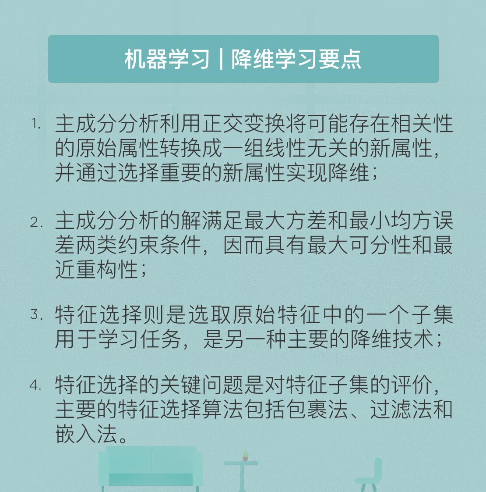

- 00 开篇词 人工智能：新时代的必修课.md.html
- 01 数学基础 九层之台，起于累土：线性代数.md.html
- 02 数学基础 月有阴晴圆缺，此事古难全：概率论.md.html
- 03 数学基础 窥一斑而知全豹：数理统计.md.html
- 04 数学基础 不畏浮云遮望眼：最优化方法.md.html
- 05 数学基础 万物皆数，信息亦然：信息论.md.html
- 06 数学基础 明日黄花迹难寻：形式逻辑.md.html
- 07 机器学习 数山有路，学海无涯：机器学习概论.md.html
- 08 机器学习 简约而不简单：线性回归.md.html
- 09 机器学习 大道至简：朴素贝叶斯方法.md.html
- 10 机器学习 衍化至繁：逻辑回归.md.html
- 11 机器学习 步步为营，有章可循：决策树.md.html
- 12 机器学习 穷则变，变则通：支持向量机.md.html
- 13 机器学习 三个臭皮匠，赛过诸葛亮：集成学习.md.html
- 14 机器学习 物以类聚，人以群分：聚类分析.md.html
- 15 机器学习 好钢用在刀刃上：降维学习.md.html
- 16 人工神经网络 道法自然，久藏玄冥：神经网络的生理学背景.md.html
- 17 人工神经网络 一个青年才俊的意外死亡：神经元与感知器.md.html
- 18 人工神经网络 左手信号，右手误差：多层感知器.md.html
- 19 人工神经网络 各人自扫门前雪：径向基函数神经网络.md.html
- 20 人工神经网络 看不见的手：自组织特征映射.md.html
- 21 人工神经网络 水无至清，人莫至察：模糊神经网络.md.html
- 22 深度学习 空山鸣响，静水流深：深度学习概述.md.html
- 23 深度学习 前方有路，未来可期：深度前馈网络.md.html
- 24 深度学习 小树不修不直溜：深度学习中的正则化.md.html
- 25 深度学习 玉不琢不成器：深度学习中的优化.md.html
- 26 深度学习 空竹里的秘密：自编码器.md.html
- 27 深度学习 困知勉行者勇：深度强化学习.md.html
- 28 深度学习框架下的神经网络 枯木逢春：深度信念网络.md.html
- 29 深度学习框架下的神经网络 见微知著：卷积神经网络.md.html
- 30 深度学习框架下的神经网络 昨日重现：循环神经网络.md.html
- 31 深度学习框架下的神经网络 左右互搏：生成式对抗网络.md.html
- 32 深度学习框架下的神经网络 三重门：长短期记忆网络.md.html
- 33 深度学习之外的人工智能 一图胜千言：概率图模型.md.html
- 34 深度学习之外的人工智能 乌合之众的逆袭：集群智能.md.html
- 35 深度学习之外的人工智能 授人以鱼不如授人以渔：迁移学习.md.html
- 36 深度学习之外的人工智能 滴水藏海：知识图谱.md.html
- 37 应用场景 你是我的眼：计算机视觉.md.html
- 38 应用场景 嘿, Siri：语音处理.md.html
- 39 应用场景 心有灵犀一点通：对话系统.md.html
- 40 应用场景 数字巴别塔：机器翻译.md.html
- 一键到达 人工神经网络复习课.md.html
- 一键到达 应用场景复习课.md.html
- 一键到达 数学基础复习课.md.html
- 一键到达 机器学习复习课.md.html
- 一键到达 深度学习之外的人工智能复习课.md.html
- 一键到达 深度学习复习课.md.html
- 一键到达 深度学习框架下的神经网络复习课.md.html
- 推荐阅读 我与人工智能的故事.md.html
- 新书 《裂变：秒懂人工智能的基础课》.md.html
- 直播回顾 机器学习必备的数学基础.md.html
- 第2季回归 这次我们来聊聊机器学习.md.html
- 结课 溯洄从之，道阻且长.md.html
- 课外谈 “人工智能基础课”之二三闲话.md.html
- （课外辅导）人工神经网络 拓展阅读参考书.md.html
- （课外辅导）数学基础 拓展阅读参考书.md.html
- （课外辅导）机器学习 拓展阅读参考书.md.html
- （课外辅导）深度学习 拓展阅读参考书.md.html
- 捐赠
15 机器学习 好钢用在刀刃上：降维学习
毛主席在《矛盾论》中提出了主要矛盾和次要矛盾的概念：“研究任何过程，如果是存在着两个以上矛盾的复杂过程的话，就要用全力找出它的主要矛盾。”这种哲学观点也可以用来指导机器学习。
一个学习任务通常会涉及样本的多个属性，但并非每个属性在问题的解决中都具有同等重要的地位，有些属性可能举足轻重，另一些则可能无关紧要。根据凡事抓主要矛盾的原则，对举足轻重的属性要给予足够的重视，无关紧要的属性则可以忽略不计，这在机器学习中就体现为降维的操作。
主成分分析是一种主要的降维方法，它利用正交变换将一组可能存在相关性的变量转换成一组线性无关的变量，这些线性无关的变量就是主成分。多属性的大样本无疑能够提供更加丰富的信息，但也不可避免地增加了数据处理的工作量。更重要的是，多数情况下不同属性之间会存在相互依赖的关系，如果能够充分挖掘属性之间的相关性，属性空间的维度就可以降低。
在现实生活中少不了统计个人信息的场合，而在个人信息的表格里通常会包括“学历”和“学位”两个表项。因为学位和学历代表着两个独立的过程，因此单独列出是没有问题的。但在我国现行的惯例下，这两者通常会一并取得。两者之间的相关性足以让我们根据一个属性的取值去推测另一个属性的取值，因此只要保留其中一个就够了。
但这样的推测是不是永远准确呢？也不是。如果毕业论文的答辩没有通过，就会出现只有学历而没有学位的情形；对于在职研究生来说，只有学位没有学历的情形也不稀奇。这说明如果将学历和学位完全等同，就会在这些特例上出现错误，也就意味着信息的损失。这是降维操作不可避免的代价。
以上的例子只是简单的定性描述，说明了降维的出发点和可行性。在实际的数据操作中，主成分分析解决的就是确定以何种标准确定属性的保留还是丢弃，以及度量降维之后的信息损失。
从几何意义来看，主成分分析是要将原始数据拟合成新的\(n\)维椭球体，这个椭球体的每个轴代表着一个主成分。如果椭球体的某个轴线较短，那么该轴线所代表的主成分的方差也很小。在数据集的表示中省略掉该轴线以及其相应的主成分，只会丢失相当小的信息量。具体说来，主成分分析遵循如下的步骤：
- 数据规范化：对\(m\)个样本的相同属性值求出算术平均数，再用原始数据减去平均数，得到规范化后的数据；
- 协方差矩阵计算：对规范化后的新样本计算不同属性之间的协方差矩阵，如果每个样本有\(n\)个属性，得到的协方差矩阵就是\(n\)维方阵；
- 特征值分解：求解协方差矩阵的特征值和特征向量，并将特征向量归一化为单位向量；
- 降维处理：将特征值按照降序排序，保留其中最大的\(k\)个，再将其对应的\(k\)个特征向量分别作为列向量组成特征向量矩阵；
- 数据投影：将减去均值后的\(m \\times n\)维数据矩阵和由\(k\)个特征向量组成的\(n \\times k\)维特征向量矩阵相乘，得到的\(m \\times k\)维矩阵就是原始数据的投影。
经过这几步简单的数学运算后，原始的\(n\)维特征就被映射到新的\(k\)维特征之上。这些相互正交的新特征就是主成分。需要注意的是，主成分分析中降维的实现并不是简单地在原始特征中选择一些保留，而是利用原始特征之间的相关性重新构造出新的特征。
为什么简单的数学运算能够带来良好的效果呢？
从线性空间的角度理解，主成分分析可以看成将正交空间中的样本点以最小误差映射到一个超平面上。如果这样的超平面存在，那它应该具备以下的性质：一方面，不同样本点在这个超平面上的投影要尽可能地分散；另一方面，所有样本点到这个超平面的距离都应该尽可能小。
样本点在超平面上的投影尽可能分散体现出的是最大方差原理。在信号处理理论中，当信号的均值为零时，方差反映的就是信号的能量，能量越大的信号对抗噪声和干扰的能力也就越强。而让投影后样本点的方差最大化，就是要让超平面上的投影点尽可能地分散。如果原始信号的投影都集中在超平面的同一个区域，不同的信号之间就会难以区分。
在数学上，投影后所有样本点的方差可以记作\(\\sum\\limits_i \\mathbf{W}^T \\mathbf{x}_i \\mathbf{x}_i^T \\mathbf{W}\)，式中每个\(n\)维向量\(\\mathbf{x}_i\)都代表具有\(n\)个属性的样本点，\(\\mathbf{W}\)则是经过投影变换后得到的新坐标系。
最大方差要求的正是求解最优的\(\\mathbf{W}\)，以使前面的方差表达式，也就是对应矩阵所有对角线元素的和最大化。经过数学处理后可以得到，使方差最大化的\(\\mathbf{W}\)就是由所有最大特征值的特征向量组合在一起形成的，也就是主成分分析的解。
在线性回归中，我向你介绍了最小均方误差的概念，主成分分析的最优性也可以从这个角度来审视。所有样本点到这个超平面的距离都应该尽可能小，意味着这些点到平面距离之和同样最小。原始样本点在低维超平面上的投影的表达式是\(\\mathbf{z}_i = (z_{i1}; z_{i2}; \\cdots; z_{ik})\)，其中每个\(z_{ij} = \\mathbf{w}_j^T \\mathbf{x}_i\)是原始样本点\(\\mathbf{x}_i\)在低维超平面上第\(j\)维上的坐标。
因而，原始样本点和在投影超平面上重构出的样本点之间的距离可以表示为\(|| \\sum\\limits_{j = 1}^k z_{ij}\\mathbf{w}_j - \\mathbf{x}_i ||_2^2\)，在整个训练集上对距离求和并最小化，求出的解就是最小均方误差意义下的最优超平面。经过数学处理后可以得到，使均方误差最小化的\(\\mathbf{W}\)就是由所有最大特征值的特征向量组合在一起形成的，同样是主成分分析的解。
在主成分分析中，保留的主成分的数目是由用户来确定的。一个经验方法是保留所有大于1的特征值，以其对应的特征向量来做坐标变换。此外，也可以根据不同特征值在整体中的贡献，以一定比例进行保留。具体方法是计算新数据和原始数据之间的误差，令误差和原始数据能量的比值小于某个预先设定的阈值。
主成分分析能够对数据进行降维处理，保留正交主成分中最重要的部分，在压缩数据的同时最大程度地保持了原有信息。主成分分析的优点在于完全不受参数的限制，即不需要先验的参数或模型对计算过程的人为干预，分析的结果只与数据有关。但有得必有失，这个特点的另一面是即使用户具有对训练数据集的先验知识，也没有办法通过参数化等方法加以利用。
除此之外，由于主成分分析中利用的是协方差矩阵，因而只能去除线性相关关系，对更加复杂的非线性相关性就无能为力了。解决以上问题的办法是将支持向量机中介绍过的核技巧引入主成分分析，将先验知识以非线性变换的形式体现，因而扩展了主成分分析的应用范围。
主成分分析实现降维的前提是通过正交变换对不同属性进行去相关。另一种更加直观的降维方式则是直接对样本的属性做出筛选，这种降维方法就是“特征选择”。特征选择的出发点在于去除不相关的特征往往能够降低学习任务的难度，它和主成分分析共同构成了处理高维数据的两大主流技术。
特征选择与特征提取不同。特征提取是根据原始特征的功能来创建新特征，特征选择则是选取原始特征中的一个子集用于学习任务。特征选择通常用于特征较多而样本较少的问题中，使用特征选择技术的核心前提是数据包含许多冗余和不相关特征，它们可以在不引起信息损失的情况下被移除。特征选择的主要应用场景包括书面文本分析和DNA微阵列数据的分析，这些场景下样本的数目通常数以百计，每个样本却可能包含成千上万的特征。
特征选择算法是搜索新的特征子集和对搜索结果进行评估两个步骤的组合。最简单的选择方法是测试每个可能的特征子集，从中找出错误率最小的特征子集。这是一个详尽的空间搜索，但子集的数目会随着特征数目的增加以指数方式增加，特征稍多时就无法进行。相比之下，一种可行的做法是产生一个特征子集并评价其效果，根据评价结果再产生新的特征子集并继续评价，直到无法找到更好的候选子集为止。
根据评价方式的不同，特征选择算法主要可以分为包裹法、过滤法和嵌入法三类。包裹法使用预测模型来评价特征子集。每个新的特征子集都用来训练一个模型，并在验证数据集上进行测试，模型在验证数据集上的错误率也就是该子集的分数。由于包裹法为每个子集都要训练一个新的模型，因而其计算量较大，但它的优点是能够找到适用特定模型的最佳特征子集。
与包裹法不同，过滤法先对数据集进行特征选择，也就是对初始特征进行过滤，再用过滤后的特征来训练模型。过滤法的计算负荷要小于包裹法，但由于特征子集和预测模型之间并没有建立对应关系，因而其性能也会劣于包裹法。但另一方面，过滤法得到的特征子集具有更强的通用性，也有助于揭示不同特征之间的关系。许多过滤器提供的不是一个明确的最佳功能子集，而是不同特征的排名，因而过滤法可以作为包裹法的预处理步骤来使用。
嵌入法结合了包裹法和过滤法的思路，将特征选择和模型训练两个过程融为一体，使学习器在训练过程中自动完成特征选择。其典型的方法是引入\(L_1\)范数作为正则项的LASSO方法。LASSO方法的原理在线性回归中已经做过介绍，在此不做重复。一般来说，嵌入法的计算复杂度在包裹法和过滤法之间。
今天我和你分享了机器学习基本算法之一的主成分分析的基本原理，也介绍了另一种降维技术特征选择，其要点如下：
- 主成分分析利用正交变换将可能存在相关性的原始属性转换成一组线性无关的新属性，并通过选择重要的新属性实现降维；
- 主成分分析的解满足最大方差和最小均方误差两类约束条件，因而具有最大可分性和最近重构性；
- 特征选择则是选取原始特征中的一个子集用于学习任务，是另一种主要的降维技术；
- 特征选择的关键问题是对特征子集的评价，主要的特征选择算法包括包裹法、过滤法和嵌入法。
降维操作实质上体现出的是主要矛盾和次要矛盾的取舍问题。在资源有限的条件下，一定要优先解决主要矛盾。那么你能想到这种思想在生活中或是科学技术上的哪些其他应用呢？
欢迎发表你的观点。

© 2019 - 2023 Liangliang Lee. Powered by gin and hexo-theme-book.